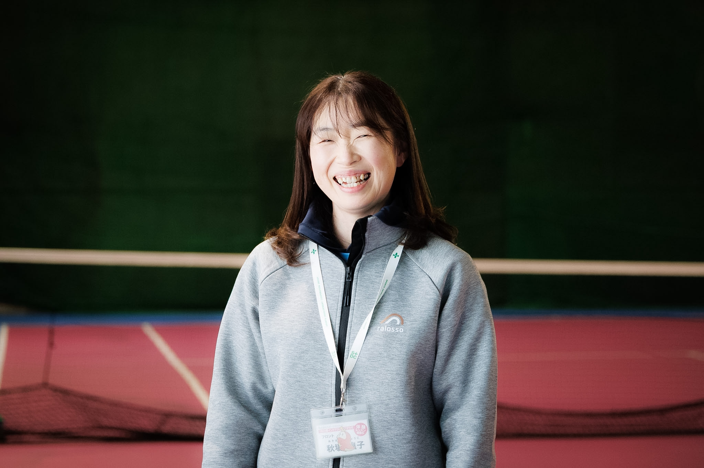
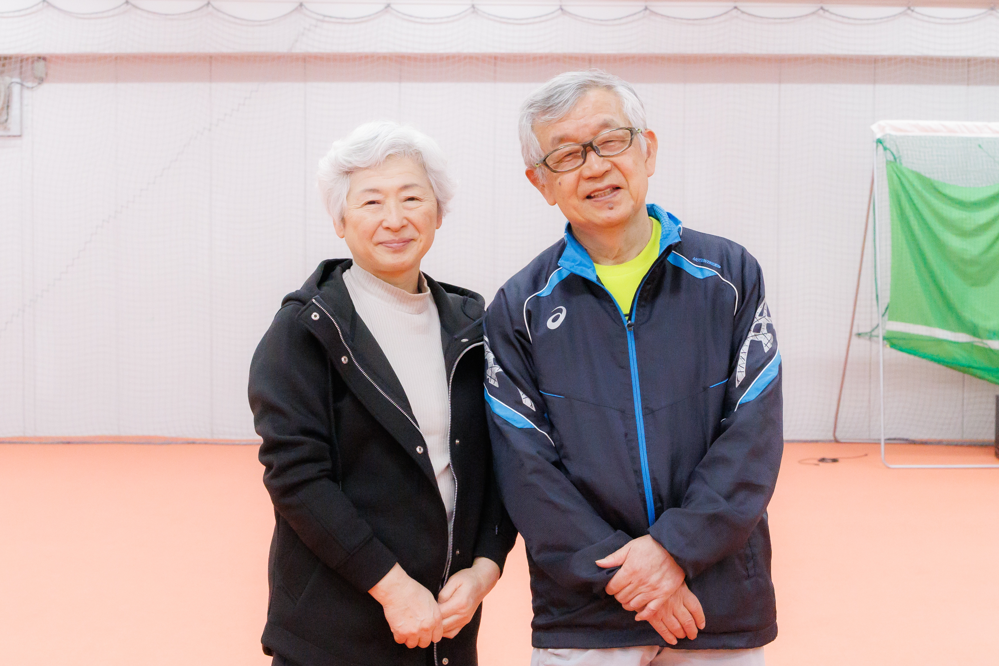

📍 竹の塚インドアスポーツプラザ
📸 施設・インタビュー写真を見る (Google Photos)💡 施設横断キーインサイト
- 「アットホーム」は偶然ではなく仕組み — フロントが拾った声をコーチ・スタッフと共有し、次回来館時に声掛け。ベテランスタッフの長期在籍と自然な心配りが支えている（秋場・高橋）
- 物販は「コーチの使用感 → 口コミ」が動力 — チラシやポップでは動かない。コーチが使い、お客さんが口コミで広げる流れが3名共通の指摘（菅谷・秋場・高橋）
- 写真サービスは全方位で好感触 — コーチは「ビフォーアフター動画」、会員は「実際の写真を見て欲しくなった」、フロントは「遺影撮ってほしい」という生の声を紹介
- 振替の取りづらさ・駐車場が共通不満 — 会員・フロント双方から同じ声。施設のハード面の制約が顕在化している
- テニスが「人を変える」エピソードが豊富 — 人見知りの女性が笑顔に（秋場）、介護疲れの会員がリフレッシュ（菅谷）、怖いコーチが変わってお客さん殺到（高橋）
- 保護者の待機時間に潜在ニーズ — 子供のレッスン中に親も何かできれば。フロント発の改善提案（秋場）
インタビュー一覧

テニス歴32年。体育会系の「怖いコーチ」から会員に寄り添うスタイルへ転換し、施設の中心に。映像活用・撮影イベントなど新規事業に積極的。中国系会員の増加や会員の7割が上達志向という現場データも。

元会員から20年勤務のベテランフロントへ。おむつの頃から社会人まで見守った成長のストーリー。フロントの「橋渡し」機能がアットホーム感の鍵。保護者の待機時間活用を自ら提案。

中学でテニスを始め、結婚・出産を経て復帰。介護疲れの中で施設が心の支えに。写真サービスに「実物を見て欲しくなった」と即反応。コーチのおすすめが物販の鍵という重要インサイト。
ビジネスアイデア反応サマリー
| アイデア | 高橋さん | 秋場さん | 菅谷さん | 総合 |
|---|---|---|---|---|
| 📸 写真サービス | ○ | ○ | ◎ | ◎ |
| 📷 撮影講座 | — | — | ○ | ○ |
| 🛍 物販（健康グッズ） | ○ | ○ | ○ | ○ |
| 🎨 文化教室 | ○ | ○ | — | ○ |
| 🤖 AI講座 | ◎ | ○ | — | ○ |
| 🧘 ストレッチ | — | ○ | — | ○ |
| 🎥 映像活用 | ◎ | — | — | ○ |
📍 イーズインドアテニススクール
📸 施設・インタビュー写真を見る (Google Photos)💡 施設横断キーインサイト
- カーペットコートはシニアの身体寿命を延ばす — オムニコートで足がパンパンになっていたシニアが「ここに来てヒアルロン酸の間隔が延びた」と絶賛。シニア層のLTV最大化の鍵。
- 「遺影写真」は笑い話ではなく切実な需要 — かしこまった写真館ではなく、大好きなテニスをして笑顔で動いている自然な生前写真・お孫さんとの写真には予算を惜しまない。
- 文化教室より「痛みに合わせた体のメンテ」 — 汎用的な教養教室よりも、テニスを長く続けるためのテーラーメイドなウォーミングアップやピラティス要素が切実に求められている。
- ジュニアの親を掴む「インドア」の絶大な安心機能 — 山口さん（熱中症回避）、赤塚さん（喘息回避）ともにインドアの気候遮断機能が圧倒的な選定理由。技術より「健康・安全な居場所」としての価値が口コミ（紹介率93%）の源泉。
- 写真サービスは「イベントでの付加価値」への転換が急務 — テニスはサッカー等と異なり写真を単体で買う文化が薄い。石川施設長の提案通り「少人数イベントにお土産として込みにする」ことで初めて高利益ビジネスとして着地する。
- 「超性善説」が支える強固なコミュニティ — 現場スタッフから経営陣に至るまで「相手を信じる・勘違いから紐解く」コミュニケーションが徹底されており、それがスタッフの定着と顧客満足度（誰も辞めたいと言わない）に繋がっている。
インタビュー一覧

西友時代からの古参会員。ご主人が定年後に夫婦で通い始め週2回のテニスが生活の軸に。カーペットコートの怪我防止効果を絶賛。「遺影代わりに使える自然な写真」や「怪我予防の体のケア」への強いニーズが判明。

元々サッカークラブだったが人数減少でテニスに転向。親としては「長く続けられる生涯スポーツ」に期待する反面、部活のない中学生にとって「週1回50分」では物足りないという上位層のジレンマも。インドアによる熱中症回避の安心感は絶大。

喘息持ちでインドア派の息子が、3年間一度も休みたいと言わず「熱が出ても行きたい」と熱中。冷気による発作の心配がないインドア環境の恩恵を強く感じている。マイペースだった我が子に「勝ちたい」意欲が芽生えるなど精神的成長に感謝。

「超・性善説」でスタッフを導き、離職を防ぎ顧客満足度の高い組織を牽引。ジュニアの紹介入会93%という圧倒的なコミュニティを持つ一方、教育都市特有の「多数の習い事の1つ」という壁を感じる。写真サービスはイベント等の付加価値としての導入を逆提案。
ビジネスアイデア反応サマリー
| アイデア | 和田ご夫妻 | 山口ご夫妻 | 赤塚さん | 石川さん | 総合 |
|---|---|---|---|---|---|
| 📸 写真サービス | ◎ | △ | ○ | ○ | ○ |
| 📷 撮影講座 | — | — | — | — | — |
| 🛍 物販（健康グッズ） | ○ | — | — | — | ○ |
| 🎨 文化教室 | ◎ | — | — | — | ○ |
| 🤖 AI講座 | — | — | — | — | — |